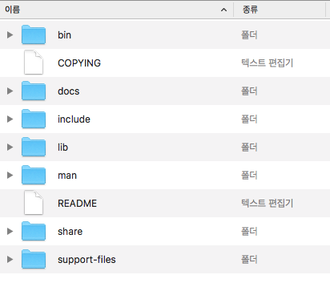

요즘 ansible 로 MySQL 프로비저닝 스크립트를 짜고 있습니다. 기존 작성되어 있던 MariaDB 스크립트를 참고해서 작성 중인데 MySQL 에서는 동작하지 않는 부분이 좀 있었습니다. 아무래도 둘이 비슷하다고는 해도 각자 버전 업이 계속 되면서 차이점이 생긴 것 같습니다. 이번 포스팅에서는 Unix/Linux 시스템에 바이너리 파일을 이용해서 설치할 경우, MySQL 5.7 버전부터 바뀐 설치 방법을 살펴보겠습니다.
Binary package

- bin : mysqld server, 클라이언트, 유틸리티 프로그램 등
- docs : MySQL 메뉴얼
- include : Include (header) 파일
- lib : 라이브러리
- man : Unix 메뉴얼 페이지
- share : 에러메시지, 딕셔너리, database 설치 SQL
- support-files : 기타 파일
MySQL 5.6 이하
MySQL 5.6 이하나 MariaDB 같은 경우 mysql_install_db 라는 스크립트를 이용해서 설치했습니다.
1 | $ scripts/mysql_install_db --user=mysql |
MySQL 5.7 이상
하지만 mysql_isntall_db 가 deprecated 되면서 사용 시 에러가 발생합니다.
MySQL 5.7.6 deprecates the mysql_install_db command and introduces a mysqld --initialize command as a replacement.[1]
대신 mysqld 의 --initialize 라는 커맨드를 이용해서 초기화 및 설치를 해야합니다.
1 | $ bin/mysqld --initialize --user=mysql |
–initialize
위 방법으로 설치할 경우, 임시 비밀번호가 발급됩니다. 이를 이용해서 처음 접속이 가능하고, 접속 후에 루트 비밀번호를 변경하면 됩니다.
1 | 2018-04-26T07:11:50.371426Z 1 [Note] A temporary password is generated for root@localhost: IL0E:rfYAtwy |
1 | $ /MySQL/mysql-5.7.21/bin/mysql -uroot -pIL0E:rfYAtwy |
–initialize-insecure
그런데 설치 스크립트에서는 이런 작업이 쉽지가 않습니다. 이럴 땐 임시 비밀번호 없이 접속할 수 있도록 설치하는 방법이 있습니다.
1 | $ bin/mysqld --initialize-insecure --user=mysql |
접속 후 패스워드 변경
임시 비밀번호 여부와 상관없이 모두 접속 후에는 패스워드를 변경해야 합니다.
1 | mysql> alter user ‘root’@’localhost’ identified by 'newpassword'; |
설치 결과 확인
mysql status
1 | $ /etc/init.d/mysqld status |
프로세스 확인
1 | $ ps -ef | grep mysql |
서버 접속 후 DB 및 유저 확인
1 | mysql> show databases; |
1 | mysql> select user from mysql.user; |
이번 포스팅에서는 바이너리 파일을 이용한 5.7 버전 이상 MySQL 설치 방법을 살펴봤습니다.
참고
- Installing MySQL on Unix/Linux Using Generic Binaries
- Server Command Options --initialize
- Server Command Options --initialize-insecure
Related Posts
- 1.https://dev.mysql.com/doc/refman/5.7/en/mysql-install-db.html ↩